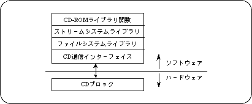

Return to previous page | Return to menu | Go to next page
Read error
If a read error occurs during reading, the CD block is first recovered in hardware. If recovery is still not possible, the library performs recovery processing a certain number of times. If recovery is not possible, the status acquisition function interrupts reading and returns an error code for the read error.
● About the path name
Specify the directory as \ or /. Directory names and file names can be used in uppercase and lowercase letters.
● Advanced usage of CD-ROM library
In SGL, functions of the file system library and stream system library can be used. Use these functions when using Cinepak or MPEG. For details, refer to the manual of each library.
If the function “slCdInit” is called, there is no need to initialize the file system and stream system.
When using a file system or stream system while reading a file with SGL, call the function “slCdPause” and check that the status is “CDSTAT_PAUSE”, or call the function “slCdAbort”.
When reading by the file system or stream system is finished and returning to SGL, it is necessary to stop reading.
